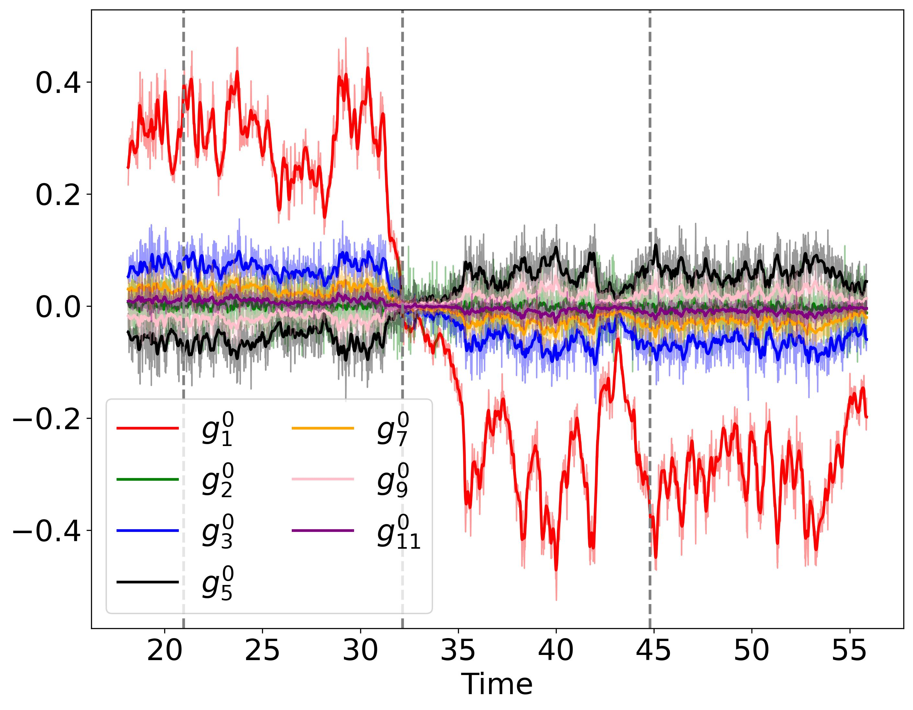

Research
My research focuses on rotating magnetohydrodynamics, dynamo theory, and fluid dynamics in rotating spherical shells.
I use numerical simulations to investigate convection-driven magnetic fields and the mechanisms responsible for different dynamo states.
Research Interests
- Rotating spherical-shell dynamos
- Magnetohydrodynamics
- Dynamo bistability
- Force balances in rotating convection
- Numerical simulations
- Fluid dynamics in rotating systems
PhD Research
My PhD research investigates bistability in rotating spherical-shell dynamo simulations with stress-free boundaries.
In particular, I study the force balances associated with dipolar and multipolar dynamo solutions and how these balances change between different dynamical regimes.

The simulations are performed using the Rayleigh code for rotating spherical-shell convection and dynamo simulations.
Methods
My work combines numerical simulations with analysis of the momentum equation and its individual force contributions.
- Rayleigh dynamo simulations
- Spherical harmonic analysis
- Force-balance diagnostics
- Vorticity and curl analysis
- Python-based data analysis and visualisation